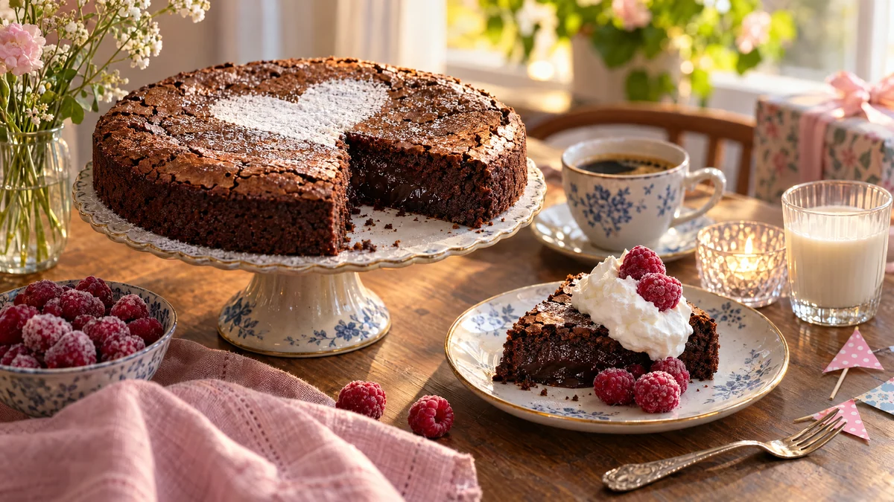

RESTFEST · RECEPTFika & bakning · Dessert
Kladdkaka utan ägg och mjölk
Mjölkfritt margarin, socker, kakao och havredryck rörs ihop i en kastrull på fem minuter. Kakan får en krispig, sprucken yta och en kladdig, nästan mousseaktig mitt, precis som den ska. Servera med vispad havregrädde och hallon, så märker ingen på kalaset att ägg och smör saknas.
- Förberedelse
- 10 min
- Tillagning
- 20–25 min
- Portioner
- 8–10 bitar
- Nivå
- Nybörjare
Bra att veta. Läs alltid innehållsförteckningen. Mjölk och ägg kan gömma sig i margarin, choklad, ströbröd, buljong, korv och bröd. Laktosfritt är inte mjölkfritt, laktosfria produkter innehåller fortfarande mjölkprotein.
 Det här behöver du
Det här behöver du
Tryck på + vid det du behöver köpa.
Kladdkaka
Till servering
Gör så här
- Sätt ugnen på 175 grader. Smörj en rund form med löstagbar kant, ca 22 cm, och strö den med kakao eller ströbröd.
- Smält margarinet i en kastrull och ta kastrullen från värmen.
- Rör ner socker, kakao, vaniljsocker och salt. Rör ner mjöl och havredryck, bara tills smeten är slät.
- Häll smeten i formen och grädda i nedre delen av ugnen i 20–25 minuter. Kakan ska vara fast i kanterna men fortfarande darra lite i mitten.
- Låt kakan svalna i formen. Ställ den gärna i kylen i en timme, då blir den extra kladdig.
- Vispa havregrädden till mjuka toppar.
Dekoration och servering
- Pudra florsocker över kakan genom en sil, gärna över en pappersmall i form av ett hjärta eller en stjärna.
- Servera med en klick vispad havregrädde och frostiga hallon.
- Kontrollera att margarinet är mjölkfritt. Vissa sorter innehåller kärnmjölk.
- Kakan håller 3–4 dagar i kylen och går bra att frysa.
Mått och ugnstemperaturer
Måtten är svenska (dl, msk, tsk, krm). Ugnstemperaturerna gäller vanlig ugn med över- och undervärme; med varmluft, sänk med 20 grader.